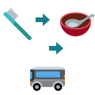
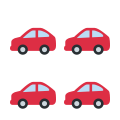
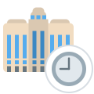
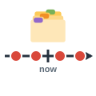

deadline
الموعد النهائي
The deadline for the project is Friday.
الموعد النهائي للمشروع يوم الجمعة.
Time at Work
مرّر الماوس على السماعة أو اضغط عليها لتسمع النطق. السماعة الكبيرة نطق أمريكي (وهو المكتوب بالرموز)، وزر UK نطق بريطاني.
الموعد النهائي
The deadline for the project is Friday.
الموعد النهائي للمشروع يوم الجمعة.
موعد (رسمي)
I have an appointment with the doctor.
لدي موعد مع الطبيب.
اجتماع
The meeting starts at two o'clock.
يبدأ الاجتماع الساعة الثانية.
وردية
She works the night shift at the hospital.
تعمل في الوردية الليلية بالمستشفى.
عمل إضافي
I worked three hours of overtime yesterday.
عملت أمس ثلاث ساعات إضافية.
استراحة
Let's take a ten-minute break.
لنأخذ استراحة عشر دقائق.

روتين
Exercise is part of my daily routine.
الرياضة جزء من روتيني اليومي.
تأخير
We apologize for the delay.
نعتذر عن التأخير.

ساعة الذروة
Avoid the city center during rush hour.
تجنب وسط المدينة في ساعة الذروة.

ساعات الدوام
Please call during office hours.
من فضلك اتصل خلال ساعات الدوام.

جدول زمني
What's the timeline for this project?
ما الجدول الزمني لهذا المشروع؟
مرحلة
The project is in its final stage.
المشروع في مرحلته النهائية.
مرحلة مهمة / إنجاز
Launching the app was a major milestone.
كان إطلاق التطبيق إنجازًا كبيرًا.
تذكير
I'll send you a reminder tomorrow.
سأرسل لك تذكيرًا غدًا.
الالتزام بالمواعيد
Punctuality is important in this company.
الالتزام بالمواعيد مهم في هذه الشركة.
إدارة الوقت
Good time management reduces stress.
تقلل إدارة الوقت الجيدة من التوتر.
ستسمع كلمة من كلمات الصفحة، فاضغط على الصورة التي تعبر عنها.
الكلمات المميزة هي كلمات هذه الصفحة. اضغط على أي كلمة ليبدأ الصوت منها ويكمل ما بعدها.
Are you coming to the meeting at two? We have to discuss the timeline.
هل ستحضر الاجتماع في الثانية؟ علينا مناقشة الجدول الزمني.
Yes, but I have a dentist appointment at four, so I can't stay long.
نعم، لكن لدي موعد عند طبيب الأسنان في الرابعة، فلا يمكنني البقاء طويلًا.
Don't worry. We only need to talk about the deadline, which is next Friday.
لا تقلق. نحتاج فقط إلى الحديث عن الموعد النهائي، وهو الجمعة القادمة.
Why is the client so unhappy? Is it because of the delay?
لماذا العميل غير راضٍ؟ هل بسبب التأخير؟
Exactly. And this stage of the project is the hardest one. Reaching it was a real milestone for us, but now we need overtime.
بالضبط. وهذه المرحلة من المشروع هي الأصعب. كان الوصول إليها إنجازًا حقيقيًا لنا، لكننا نحتاج الآن إلى عمل إضافي.
My team is tired. The night shift has already broken its routine for weeks.
فريقي متعب. فقد اختل روتين الوردية الليلية منذ أسابيع.
I know. Let's give them a long break after the launch. Punctuality has been excellent, by the way.
أعلم. لنمنحهم استراحة طويلة بعد الإطلاق. بالمناسبة، كان الالتزام بالمواعيد ممتازًا.
That's true. I think better time management can solve most of our problems.
هذا صحيح. أظن أن إدارة الوقت بشكل أفضل قد تحل معظم مشكلاتنا.
I agree. Can you send everyone a reminder about the meeting?
أوافقك. هل يمكنك إرسال تذكير للجميع بالاجتماع؟
I will. Should people call the client during office hours?
سأفعل. هل ينبغي أن يتصل الناس بالعميل خلال ساعات الدوام؟
Yes, and they should leave before rush hour, if they can.
نعم، وعليهم المغادرة قبل ساعة الذروة إن استطاعوا.
الكلمات المميزة هي كلمات هذه الصفحة. اضغط على أي كلمة ليبدأ الصوت منها ويكمل ما بعدها.
Working in a hospital has taught me a lot about time. My shift starts at seven, and I must be there before the morning rush hour. My routine never changes: I check the patient list, answer every reminder on my screen, and attend a short meeting with the other nurses. Punctuality matters here, because even a small delay can affect a patient's appointment with a doctor. During office hours the phones never stop, and I am lucky if I get a ten-minute break. Last year we built a new department. The timeline was difficult, and we had a strict deadline to open before the winter. In the final stage of the building work, I did a lot of overtime. Opening the department was a true milestone for all of us. That experience taught me that good time management is not about working faster, but about knowing what matters most.
علّمني العمل في المستشفى الكثير عن الوقت. تبدأ ورديتي في السابعة، وعليّ أن أكون هناك قبل ساعة الذروة الصباحية. ولا يتغير روتيني أبدًا: أراجع قائمة المرضى، وأستجيب لكل تذكير على شاشتي، وأحضر اجتماعًا قصيرًا مع الممرضين الآخرين. والالتزام بالمواعيد مهم هنا، لأن حتى التأخير البسيط قد يؤثر في موعد المريض مع الطبيب. وخلال ساعات الدوام لا تتوقف الهواتف عن الرنين، وأكون محظوظًا إذا حصلت على استراحة عشر دقائق. وفي العام الماضي أنشأنا قسمًا جديدًا. كان الجدول الزمني صعبًا، وكان لدينا موعد نهائي صارم للافتتاح قبل الشتاء. وفي المرحلة الأخيرة من أعمال البناء عملت ساعات إضافية كثيرة. وكان افتتاح القسم إنجازًا حقيقيًا لنا جميعًا. وقد علمتني تلك التجربة أن إدارة الوقت الجيدة لا تعني العمل بسرعة أكبر، بل معرفة ما هو الأهم.